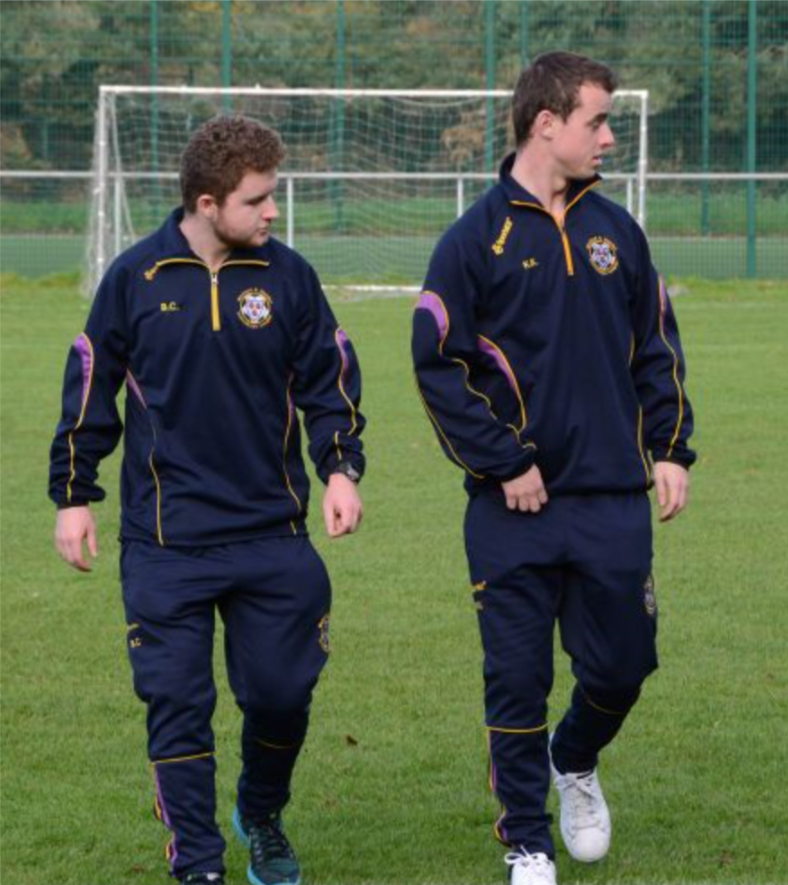

Let's start with myself
I'm a 20 year old college student with a keen interest in many areas, those of which I will get into individually on this page
I am from Ireland, specifically a county called Wexford but I am not a home bird by any means, I LOVE to travel.
I currently attend Dublin City University studying Computer Applications and I am in my first year of study in this course.

What I do in my spare time
Not that I have much spare time to begin with, but I do like to spend it in a giving way.
As football(soccer) is a passion of mine and has been since I could walk, I do play the sport but I also am a qualified coach.
I am currently involved with the Wexford and District Schoolboys league county team as a coach to their Under 14 boys team.
